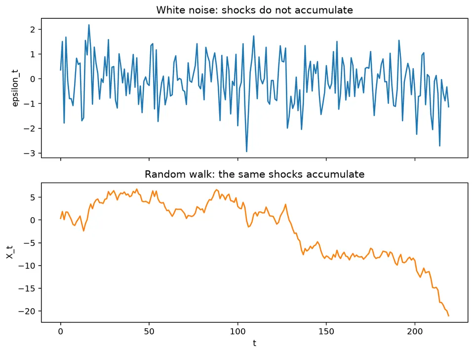

A stochastic process is a collection of random variables indexed by time, and an observed time series is one realized path from that process. This viewpoint separates the data we actually see from the probabilistic mechanism used to describe possible paths and future uncertainty.
White noise is the basic reference process for new, unstructured shocks. It has stable second-order behavior and no linear serial correlation, so many time-series models aim to explain the predictable structure in the data and leave behind innovations that behave approximately like white noise.
| Concept | General formula | Interpretation / special case |
|---|---|---|
| Stochastic process | $\{X_t:t\in T\}$ | A time series $x_1,\ldots,x_n$ is one realized sample path. |
| Mean function | $\mu_t=E[X_t]$ | Weak stationarity requires $\mu_t$ to be constant. |
| Covariance function | $\gamma(t,s)=\mathrm{Cov}(X_t,X_s)$ | Under weak stationarity, it depends only on $t-s$. |
| Innovation | $\varepsilon_t=X_t-E(X_t\mid\mathcal F_{t-1})$ | Then $E(\varepsilon_t\mid\mathcal F_{t-1})=0$. |
| Weak white noise | $E\varepsilon_t=0$, $\mathrm{Var}(\varepsilon_t)=\sigma^2$, $\mathrm{Cov}(\varepsilon_t,\varepsilon_{t-h})=0$ for $h\ne0$ | Zero serial covariance does not imply independence. |
| Gaussian white noise | $\varepsilon_t\stackrel{iid}{\sim}N(0,\sigma^2)$ | Common stronger assumption used for likelihoods and intervals. |
| Linear process | $X_t=\mu+\sum_{j=0}^{\infty}\psi_j\varepsilon_{t-j}$ | A broad representation for stationary linear time series. |
| Linear-process variance | $\mathrm{Var}(X_t)=\sigma_\varepsilon^2\sum_{j=0}^{\infty}\psi_j^2$ | Holds for uncorrelated innovations when the squared weights are summable. |
| Random walk | $X_t=X_{t-1}+\varepsilon_t=X_0+\sum_{j=1}^{t}\varepsilon_j$ | First difference is white noise: $\Delta X_t=\varepsilon_t$. |
| Random-walk variance | $\mathrm{Var}(X_t\mid X_0)=t\sigma^2$ | Shows why the level is not weakly stationary. |
| Martingale difference | $E(\varepsilon_t\mid\mathcal F_{t-1})=0$ | Rules out predictable conditional-mean structure. |
Let $\varepsilon_t$ be independent with mean 0 and variance 1. It is white noise because
$$ \mathrm{Cov}(\varepsilon_t,\varepsilon_{t-h})=0\quad(h\ne0). $$
Now define a random walk by $X_t=X_{t-1}+\varepsilon_t$ with fixed $X_0$. After 100 steps,
$$ X_{100}=X_0+\sum_{j=1}^{100}\varepsilon_j, \qquad \mathrm{Var}(X_{100})=100. $$
The individual shocks have constant variance, but the variance of their accumulated sum grows with time. This is the simplest calculation showing why white-noise increments do not make the random-walk level stationary.

The figure contrasts the stable spread of the shocks with the increasing dispersion of their cumulative sum. The visual distinction mirrors the variance calculation above.
A time series is one observed path from an underlying stochastic process: a family of random variables indexed by time,
$$ \{X_t:t\in T\}. $$
For a fixed time $t$, $X_t$ is a random variable. After observation, its realized value is written $x_t$. The sequence $x_1,\ldots,x_n$ is one sample path, or realization, of the process.
Many time-series models separate each observation into a predictable component and a new shock:
$$ X_t=m_t+\varepsilon_t. $$
The term $m_t$ summarizes information available before time $t$, while $\varepsilon_t$ represents new information arriving at time $t$. In ARMA-type models, these shocks are often called innovations.
This distinction matters because a useful model should explain the predictable structure and leave an innovation that cannot be systematically forecast from the past.
The notation $X_t$ and $x_t$ keeps two ideas separate:
A stochastic process is a collection of random variables indexed by time. A dataset gives one path, not every possible path. The model describes a distribution over paths and uses the observed path to infer the underlying mechanism and future uncertainty.
Let $\mathcal F_t$ contain the observations and predictors available through time $t$. A one-step innovation is the unpredictable part of the next observation:
$$ \varepsilon_{t+1}=X_{t+1}-E(X_{t+1}\mid\mathcal F_t). $$
By construction,
$$ E(\varepsilon_{t+1}\mid\mathcal F_t)=0. $$
This conditional statement is stronger and more targeted than merely finding a small unconditional sample autocorrelation. A process can have zero linear autocorrelation while its conditional variance or another nonlinear feature still depends on the past.
Weak white noise requires
$$ E(\varepsilon_t)=0,\qquad \mathrm{Var}(\varepsilon_t)=\sigma^2,\qquad \gamma(h)=0\quad(h\ne0). $$
Several related terms are used in practice:
| term | additional property |
|---|---|
| weak white noise | constant mean and variance, with zero autocovariances at nonzero lags |
| independent white noise | observations are independent across time |
| Gaussian white noise | usually independent normal observations with constant variance |
| martingale difference | conditional mean is zero given the past |
These concepts overlap, but they are not interchangeable. State which assumption is being used before drawing conclusions from it.
Let $Z_t$ be independent and symmetric around zero, and define
$$ X_t=Z_tZ_{t-1}. $$
For many symmetric distributions, adjacent $X_t$ values can have zero linear correlation even though they share an underlying random variable and are not independent. This illustrates why an ACF close to zero does not by itself establish independence.
If $\varepsilon_t$ has variance $\sigma^2$ and
$$ X_t=X_0+\sum_{j=1}^{t}\varepsilon_j, $$
then, for fixed $X_0$ and independent increments,
$$ \mathrm{Var}(X_t\mid X_0)=t\sigma^2. $$
With $\sigma^2=4$, the conditional variance after 25 steps is $100$. The increments retain the same variance at every time point, but uncertainty about the level accumulates from one step to the next.
White-noise residuals are a target for a conditional-mean model. If residuals retain autocorrelation, some predictable mean structure remains. If squared residuals retain autocorrelation, the conditional variance may still be time-varying. Heavy-tailed residuals can also make Gaussian prediction intervals too narrow.
These diagnostics provide evidence rather than proof. A finite sample can look white by chance, and standard autocorrelation tests have limited power against nonlinear or time-varying alternatives.
A weak white-noise process $\{\varepsilon_t\}$ satisfies
$$ E[\varepsilon_t]=0, \qquad \mathrm{Var}(\varepsilon_t)=\sigma^2, \qquad \mathrm{Cov}(\varepsilon_t,\varepsilon_{t-h})=0\quad(h\ne0). $$
The definition therefore combines a constant mean and variance with the absence of linear serial correlation. It does not require independence. Independent white noise adds independence across time, while Gaussian white noise is commonly taken to mean independent normal innovations with constant variance.
For a fitted time-series model, residuals that resemble white noise indicate that the model has removed the systematic linear dependence it was designed to explain. That is a necessary diagnostic for many models, but not a guarantee that every aspect of the data-generating process has been captured.
White noise is weakly stationary, while a random walk accumulates white-noise shocks:
$$ X_t=X_{t-1}+\varepsilon_t =X_0+\sum_{j=1}^{t}\varepsilon_j. $$
Because the variance of the level grows with $t$, the random walk is not weakly stationary even though its first differences are white noise. The worked calculation and figure at the start of the chapter show this contrast directly.
If $\mathcal F_{t-1}$ represents the information available before time $t$, a martingale difference satisfies
$$ E[\varepsilon_t\mid\mathcal F_{t-1}]=0. $$
This condition rules out predictable conditional-mean structure. Weak white noise, by contrast, only rules out linear autocorrelation in the unconditional second moments. A sequence can satisfy one condition without satisfying every stronger notion of independence.
Continue with stationarity, autocovariance, and autocorrelation to see how these ideas are used in time-series modeling and diagnostics.